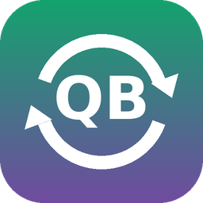
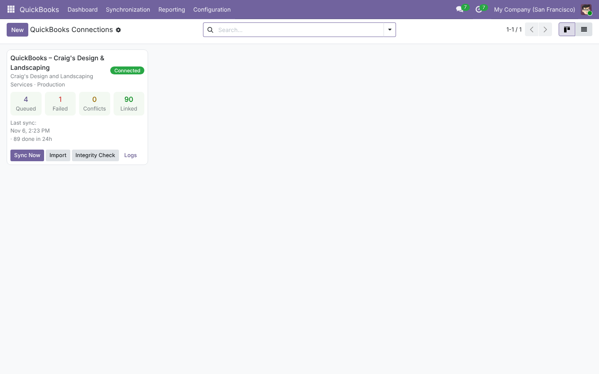
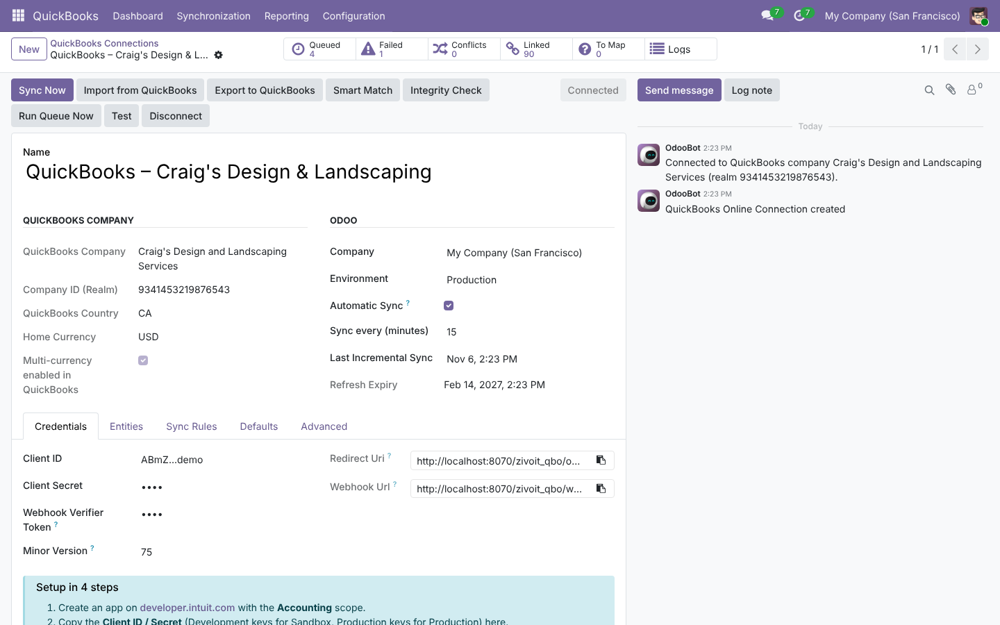
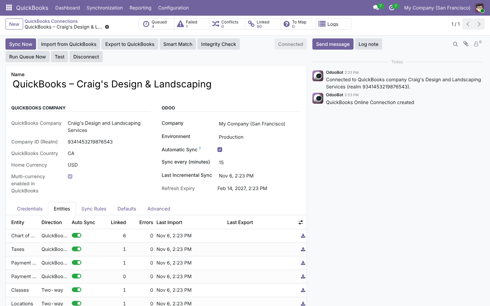
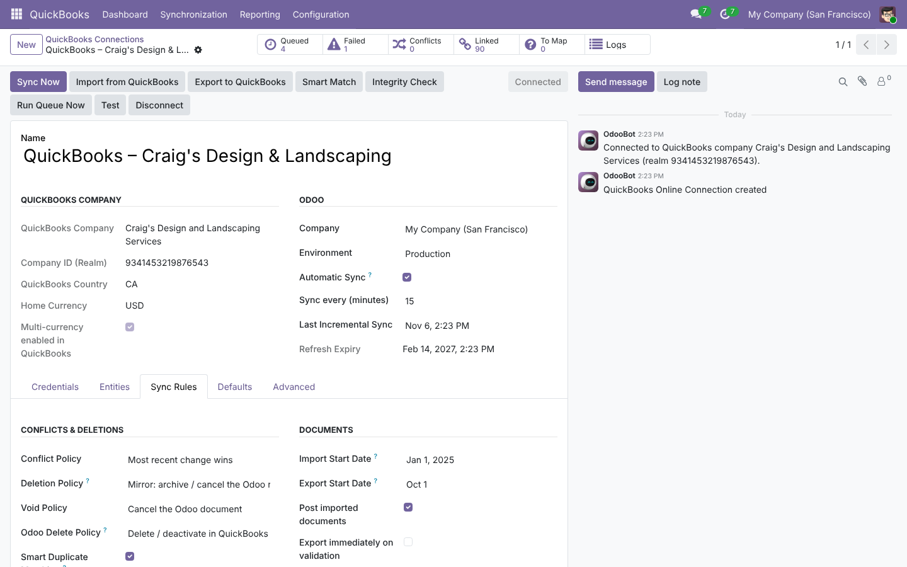
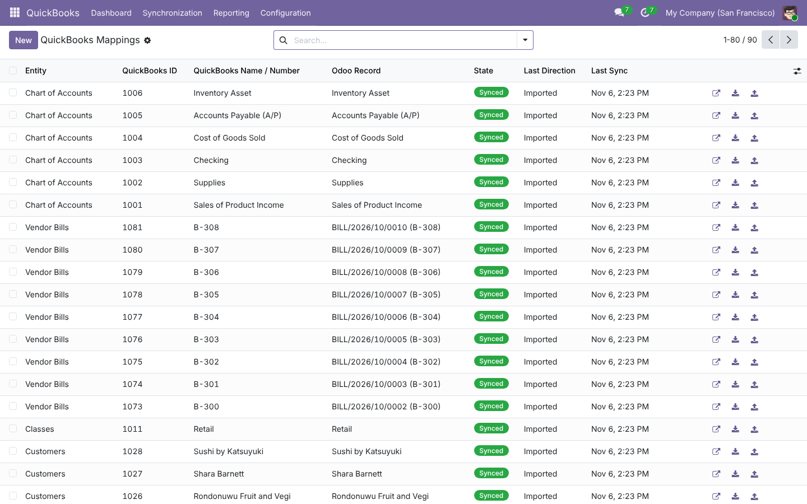
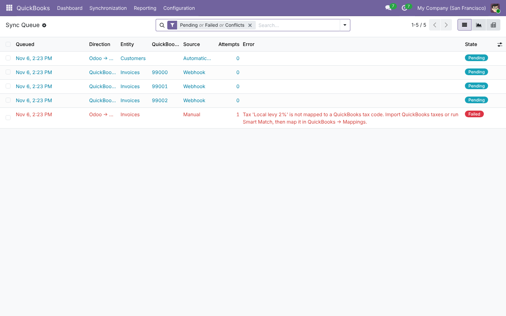
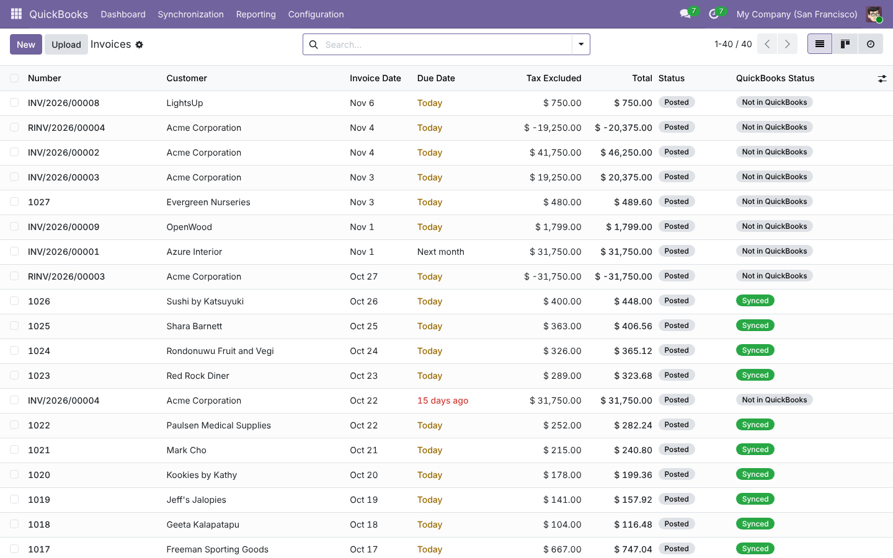

Real-time, two-way Odoo 19 ⇄ QuickBooks Online synchronization
Customers, vendors, products, invoices, bills, credit notes, sales receipts, payments, estimates, purchase orders, journal entries, taxes, payment terms, classes and locations – kept in sync automatically through Intuit webhooks (new CloudEvents format) and Change Data Capture, with conflict resolution, deletion & void detection and a built-in integrity check.
Built for the 2026 Intuit platform – not a port of a 2018 connector.
Webhooks (legacy and the CloudEvents format mandatory since July 2026) push changes instantly; Change Data Capture catches up everything else in one call – no wasteful polling, no API-limit surprises.
QuickBooks SyncToken optimistic locking detects edits made on both sides. Choose: newest wins, QuickBooks wins, Odoo wins, or hold as a conflict and decide with one click.
The Integrity Check compares every invoice, bill, credit and payment – totals and open balances – and fixes differences in one click. Show your auditor both books agree.
Deleted or voided in QuickBooks? The Odoo document is cancelled (or flagged – your choice). Cancelled in Odoo? It is voided in QuickBooks. Merged customers are re-pointed automatically.
Fuzzy matching links existing accounts (by number or name), taxes (by rate), payment methods, customers (e-mail / VAT / name) and products (SKU / name) before anything is created – on both sides.
OAuth 2.0 with signed state, tokens encrypted at rest, rotating refresh tokens saved in an independent transaction the instant Intuit issues them (never lose your connection), daily keep-alive and one-click revoke.
Queued, failed, conflict and linked counters per QuickBooks company, with one-click Sync, Import and Integrity Check.

Copy-ready redirect & webhook URLs, sandbox ribbon, token expiry, and a 4-step setup guide.

Two-way, import-only, export-only or disabled – per entity – with live counts and import/export-now buttons.

Conflict, deletion, void and Odoo-delete policies; start dates; numbering; auto-posting; estimate/PO confirmation.

One mapping table for everything: status, direction, last sync, re-import / re-export, open record. Map anything manually in place.

Automatic retries with exponential back-off, dependency ordering, Run / Retry / Skip / Keep-Odoo / Keep-QuickBooks actions.

Filter "Not in QuickBooks" / "QuickBooks errors", send in bulk, e-mail through QuickBooks, attach the QuickBooks PDF.

| Capability | Typical connector | ZivoIT Connector Pro |
|---|---|---|
| Real-time webhooks incl. 2026 CloudEvents format, signature-verified | ✖ / legacy only | ✅ |
| Change Data Capture incremental sync (with deletions) | ✖ (polling) | ✅ |
| Conflict detection with 4 resolution policies | ✖ | ✅ |
| Deletion, void & merge handling – both directions | ✖ | ✅ |
| Integrity check (totals + open balances) with one-click fix | ✖ | ✅ |
| US Automated Sales Tax totals that match to the cent | limited | ✅ |
| Persistent queue, retries with back-off, rate-limit aware (500 req/min) | ✖ (UI blocks) | ✅ |
| Smart Match for accounts, taxes, payment methods, contacts, products | partial | ✅ |
| Classes & Locations → analytic accounting | ✖ | ✅ |
| Encrypted tokens, rotating refresh-token safety, minor version 75+ | ✖ | ✅ |
| Multi-company, multiple QuickBooks companies | partial | ✅ |
| Automated test-suite shipped with the module | ✖ | ✅ 102 tests |
Create an app at developer.intuit.com with the Accounting scope.
In Odoo: QuickBooks → Dashboard → New, paste Client ID & Secret, copy the Redirect URI into Intuit.
Click Connect to QuickBooks, approve, then Smart Match and Import from QuickBooks.
Optional: add the Webhook URL + verifier token in Intuit for instant sync. Done – it runs by itself.
Does it work with QuickBooks Desktop?
No – QuickBooks Online (all editions and regions) through the official Intuit v3 API.
Does it work on Odoo Online (SaaS)?
Odoo Online does not allow third-party Python modules. Use Odoo.sh or on-premise.
My server is not reachable from the internet (localhost). Can I still connect?
Yes. Use Enter Tokens Manually with a refresh token from the Intuit OAuth 2.0 Playground. Webhooks need a public HTTPS URL, but scheduled CDC sync works everywhere.
Will my historical data be duplicated?
No. Smart duplicate matching links existing records first, and transactions before the configurable start dates are ignored.
What happens if both sides change the same invoice?
QuickBooks' SyncToken detects it. Your conflict policy decides; with "Ask me" the job waits in the queue with Keep Odoo / Keep QuickBooks buttons.
Which Python libraries are required?requests and cryptography – both already shipped with Odoo 19.
Inventory app required?
No. Dependencies are Invoicing, Sales and Purchase. If Inventory is installed, storable products and opening stock are handled too.
Official Odoo partner. Free bug-fix support · paid implementation and data migration services.
info@zivoit.com · www.zivoit.com
QuickBooks and Intuit are trademarks of Intuit Inc. This module is an independent integration and is not affiliated with or endorsed by Intuit.